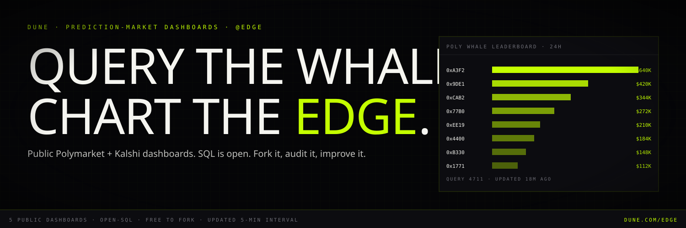

03.12 / Social Asset Pack · Dune
Dune. Open SQL.
PFP 512×512 circle, cover 1500×500. Dune is the credibility surface — we ship 5 focused dashboards, all SQL public, all forkable. Each closes with a cross-link to the live terminal.
Profile Picture
03.12.01 · 512×512 · circle

512 × 512 · SVG
512 × 512 · circle render
Cover
03.12.02 · 1500×500

1500 × 500 · SVG
Bio
03.12.03
primary · 160
Profile bio
Public Polymarket + Kalshi dashboards. Whale leaderboards, sentiment divergence, cross-venue arbitrage. SQL is open — fork it, audit it, improve it.
First 5 Public Dashboards
03.12.04 · pin the divergence leaderboard
01
Polymarket Whale Leaderboard
dune.com/edge/polymarket-whales
Top wallets on Polymarket by 24h / 7d / 30d notional volume, with historical hit-rate.
02
Kalshi Flow Tape
dune.com/edge/kalshi-flow
Real-time tape of Kalshi event-contract trades, grouped by category (politics / macro / climate / sports).
03
Divergence Leaderboard ★ PIN
dune.com/edge/divergence-leaderboard
Cross-venue + sentiment divergence for every overlapping Polymarket × Kalshi market.
04
Election Markets Aggregate
dune.com/edge/election-2028
Every 2028 US election market, normalized to comparable units, with rolling cross-venue arbitrage.
05
$EDGE Token & Holder Metrics
dune.com/edge/edge-token
Real-time holder count, distribution, and on-chain activity for the $EDGE token on Solana.
Each dashboard description ends with: "All queries public. Fork at will. Methodology: github.com/edgeterminal/dune-queries." Cross-link to www.thepolyedge.com at the bottom of every dashboard.
Setup Notes
03.12.05
Create Dune team at
dune.com/edge. Add the brand workspace user. Upload pfp.svg (512×512 PNG) and banner.svg (1500×500 PNG).Build dashboards in order: 03 (divergence) first — it's the differentiator. Then 01 (Polymarket whales), 02 (Kalshi flow), 04 (election), 05 (token).
Pin dashboard 03 to the profile. Submit each to Dune's Featured queue within 24h of publishing.
Mirror all SQL into
github.com/edgeterminal/dune-queries. Link in every dashboard description. Open to PRs.Embed dashboard 03 live on the site's
/research page (Dune supports iframe embed for free tier).Friday cadence: post a Dune chart screenshot to X with the dashboard link. This is the cleanest "credibility receipt" content we have.